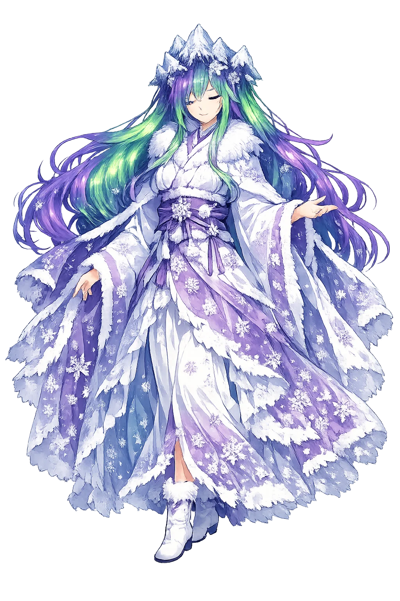
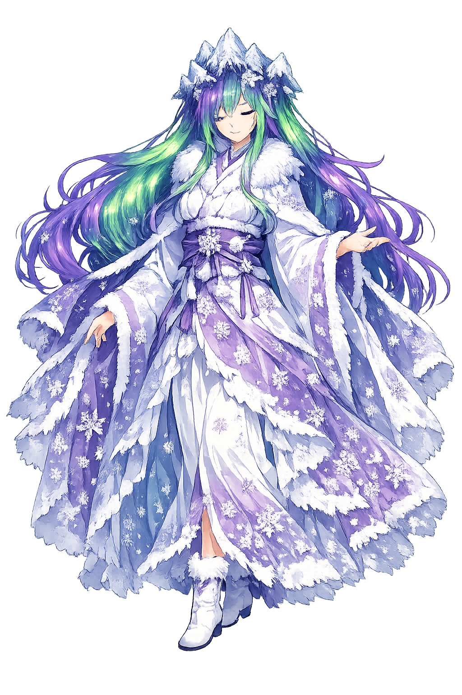

Unicode restoration and ASCII comparison
北海道
The name in its original Japanese form. Hokkaidō (北海道) is attested in the source tradition — “Northern sea circuit”. Its macron-length vowels carry the full phonetic and orthographic weight of the source tradition.
hokkaido
Reduced to plain hokkaido, the name loses everything that made it specific: macron-length vowels. What remains is an ASCII string that machines can parse but that no longer speaks with its original voice.
Hokkaidō
The Unicode restoration recovers what ASCII flattened. Hokkaidō restores macron-length vowels, returning the name to its original written dignity. The domain encodes to Punycode, but the browser displays the truth.
Hokkaidō.com → xn--hokkaid-cmb.com
The non-ASCII characters in Hokkaidō are encoded while the ASCII remains visible. To the DNS, it is Punycode. To humanity, it is Hokkaidō.
How Hokkaidō is preserved in writing
A bespoke provenance study for Hokkaidō is being prepared by the PUNICODEX scholarly team.
Contribute scholarly provenance →How Hokkaidō was spoken
Ainu Mosir, the Frontier, and the Snow Country
Hokkaidō is Japan's youngest name on its oldest ground: an island inhabited for twenty thousand years, homeland of the Ainu, mapped into the Japanese state only in 1869 — a frontier whose ancient name, Ainu Mosir, still names the deeper country beneath the modern one.
Drift ice, powder snow, and the Sapporo Snow Festival — the island's signature climate.
"The quiet land of humans" — the Ainu name for the island, older than any map of Japan.
The Colonization Commission of 1869: the frontier office that made Ezochi into Hokkaidō.
The peninsula UNESCO calls one of the world's richest temperate ecosystems — Ainu for "the end of the land."
Stories of Hokkaidō
Hokkaidō's mythology is Ainu: a kamuy-cosmos where every animal, fire, and tool has a spirit-owner, and where the human world is maintained by right exchange with the unseen.
Ainu oral tradition divides existence between Ainu Mosir, the land of humans, and Kamuy Mosir, the land of the spirits — and teaches that kamuy visit the human world wearing animal bodies as gifts. The bear is the mountain god's greatest visitation; the fire goddess, Ape-huci-kamuy, keeps every hearth and carries every prayer to the spirit world. The island itself is a borderland between the two realms.
The iomante — "sending off" — returns the visiting bear-spirit to Kamuy Mosir with songs, prayers, and gifts, so that the god will tell the other kamuy of human courtesy and come again in generous flesh. Long misread by outsiders as cruelty, it is among the most studied hunting ceremonies on earth: a theology of gratitude in which killing and honouring are the same act.
The island's modern foundation-myth is documentary: in 1869 the new Meiji state renamed Ezochi, established the Kaitakushi (Colonization Commission), and invited American advisers — Capron, Clark ("Boys, be ambitious!") — to lay out farms, ports, and Sapporo itself on the American grid. A century of settlement followed; the Ainu were legally recognized as indigenous only in 2008, and the Ainu Promotion Act of 2019 opened a new chapter at last.
Hokkaidō is the island of two names — the one it was given and the one it had. It asks the frontier's hardest question, the one every settled map must answer: whose land was this before it was yours — and can the new name learn to carry the old one's meaning?
Enter Extended Lore